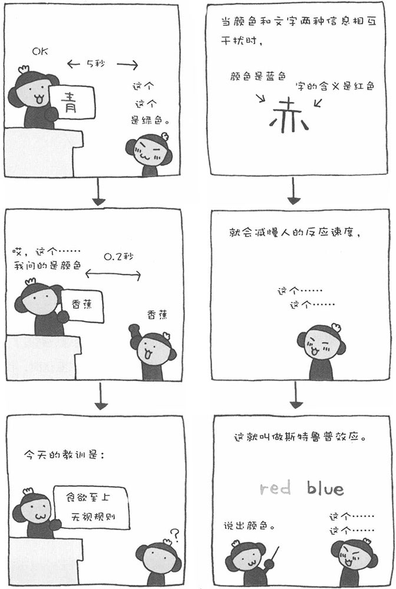

首先，我们来做一个简单的实验。请先阅读下列汉字。
蓝 黄 红 绿 蓝 红 绿 黄
接下来，再回答下列圆点的颜色。
● ● ● ● ● ● ● ●
大家都没有问题能回答出以上两个问题。那么，请说出下列文字的颜色（不是文字，而是文字的颜色）。
黄 绿 红 蓝 绿 红 黄 蓝
怎么样？是不是有点混乱呢？像这样，当我们的大脑要同时处理文字的意思和文字的颜色两种信息时，二者会相互干扰，从而减慢我们大脑的反应速度。这是由于我们读单词的速度比认知色名的速度快的缘故。最早发现这种现象的是心理学家斯特鲁普，于是人们把这种现象称为"斯特鲁普效应"。我们知道必须回答文字的颜色，但由于大脑反应文字含义的速度更快，不知不觉就读出了汉字。尤其是上了年纪的人，这种倾向更加明显。
